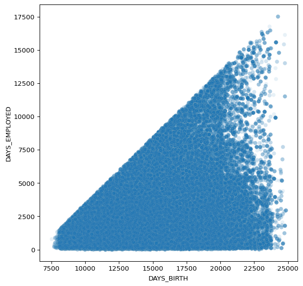
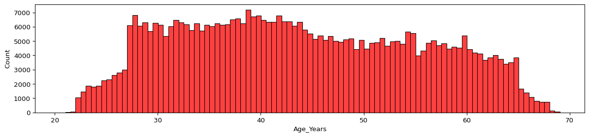
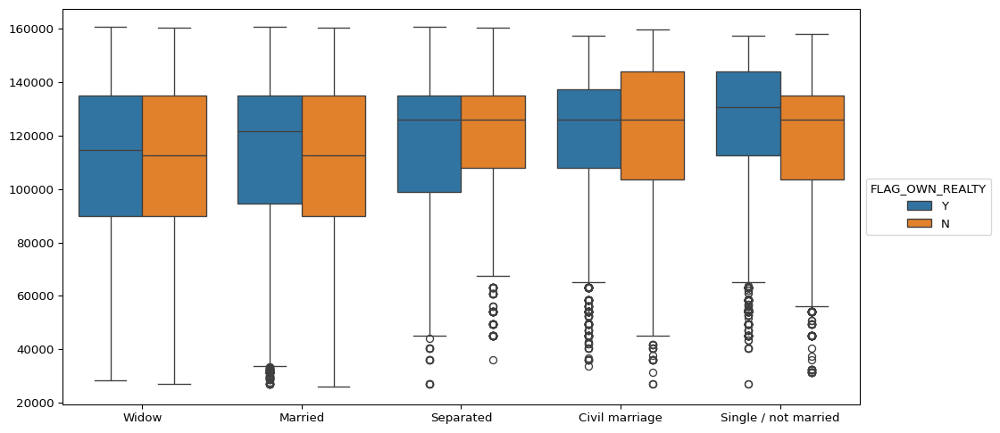
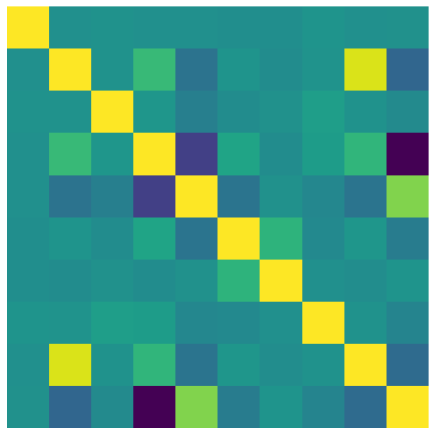

import numpy as np
import pandas as pd
import seaborn as sns
import matplotlib.pyplot as pltSeaborn Exercises
- This homework is designed to test your skills at creating data visualizations using Seaborn.
- There are FOUR tasks. Solve all four.
- You are highly encouraged to refer to the official Seaborn documentation (apart from class notes) while solving this homework.
- Link to Seaborn documentation: https://seaborn.pydata.org/
- Additional resources: MatplotLib tutorial in Sec. 1.4 in the Scientific Python lectures (link available on the course website under “Syllabus and General Information”)
Imports
Run the cell below to import the libraries
The Data
The dataset for this homework is also available on Kaggle: https://www.kaggle.com/rikdifos/credit-card-approval-prediction
Brief Description:
- Credit score cards are a common risk control method in the financial industry.
- It uses personal information and data submitted by credit card applicants to predict the probability of future defaults and credit card borrowings.
- The bank is able to decide whether to issue a credit card to the applicant.
- Essentially, credit scores can help quantify the magnitude of risk.
Feature Information:
| application_record.csv | ||
|---|---|---|
| Feature name | Explanation | Remarks |
ID
|
Client number | |
CODE_GENDER
|
Gender | |
FLAG_OWN_CAR
|
Is there a car | |
FLAG_OWN_REALTY
|
Is there a property | |
CNT_CHILDREN
|
Number of children | |
AMT_INCOME_TOTAL
|
Annual income | |
NAME_INCOME_TYPE
|
Income category | |
NAME_EDUCATION_TYPE
|
Education level | |
NAME_FAMILY_STATUS
|
Marital status | |
NAME_HOUSING_TYPE
|
Way of living | |
DAYS_BIRTH
|
Birthday | Count backwards from current day (0), -1 means yesterday |
DAYS_EMPLOYED
|
Start date of employment | Count backwards from current day(0). If positive, it means the person currently unemployed. |
FLAG_MOBIL
|
Is there a mobile phone | |
FLAG_WORK_PHONE
|
Is there a work phone | |
FLAG_PHONE
|
Is there a phone | |
FLAG_EMAIL
|
Is there an email | |
OCCUPATION_TYPE
|
Occupation | |
CNT_FAM_MEMBERS
|
Family size |
df = pd.read_csv('application_record.csv')df.head(3)| ID | CODE_GENDER | FLAG_OWN_CAR | FLAG_OWN_REALTY | CNT_CHILDREN | AMT_INCOME_TOTAL | NAME_INCOME_TYPE | NAME_EDUCATION_TYPE | NAME_FAMILY_STATUS | NAME_HOUSING_TYPE | DAYS_BIRTH | DAYS_EMPLOYED | FLAG_MOBIL | FLAG_WORK_PHONE | FLAG_PHONE | FLAG_EMAIL | OCCUPATION_TYPE | CNT_FAM_MEMBERS | |
|---|---|---|---|---|---|---|---|---|---|---|---|---|---|---|---|---|---|---|
| 0 | 5008804 | M | Y | Y | 0 | 427500.0 | Working | Higher education | Civil marriage | Rented apartment | -12005 | -4542 | 1 | 1 | 0 | 0 | NaN | 2.0 |
| 1 | 5008805 | M | Y | Y | 0 | 427500.0 | Working | Higher education | Civil marriage | Rented apartment | -12005 | -4542 | 1 | 1 | 0 | 0 | NaN | 2.0 |
| 2 | 5008806 | M | Y | Y | 0 | 112500.0 | Working | Secondary / secondary special | Married | House / apartment | -21474 | -1134 | 1 | 0 | 0 | 0 | Security staff | 2.0 |
df.info()<class 'pandas.core.frame.DataFrame'>
RangeIndex: 438557 entries, 0 to 438556
Data columns (total 18 columns):
# Column Non-Null Count Dtype
--- ------ -------------- -----
0 ID 438557 non-null int64
1 CODE_GENDER 438557 non-null object
2 FLAG_OWN_CAR 438557 non-null object
3 FLAG_OWN_REALTY 438557 non-null object
4 CNT_CHILDREN 438557 non-null int64
5 AMT_INCOME_TOTAL 438557 non-null float64
6 NAME_INCOME_TYPE 438557 non-null object
7 NAME_EDUCATION_TYPE 438557 non-null object
8 NAME_FAMILY_STATUS 438557 non-null object
9 NAME_HOUSING_TYPE 438557 non-null object
10 DAYS_BIRTH 438557 non-null int64
11 DAYS_EMPLOYED 438557 non-null int64
12 FLAG_MOBIL 438557 non-null int64
13 FLAG_WORK_PHONE 438557 non-null int64
14 FLAG_PHONE 438557 non-null int64
15 FLAG_EMAIL 438557 non-null int64
16 OCCUPATION_TYPE 304354 non-null object
17 CNT_FAM_MEMBERS 438557 non-null float64
dtypes: float64(2), int64(8), object(8)
memory usage: 60.2+ MBdf.describe()| ID | CNT_CHILDREN | AMT_INCOME_TOTAL | DAYS_BIRTH | DAYS_EMPLOYED | FLAG_MOBIL | FLAG_WORK_PHONE | FLAG_PHONE | FLAG_EMAIL | CNT_FAM_MEMBERS | |
|---|---|---|---|---|---|---|---|---|---|---|
| count | 4.385570e+05 | 438557.000000 | 4.385570e+05 | 438557.000000 | 438557.000000 | 438557.0 | 438557.000000 | 438557.000000 | 438557.000000 | 438557.000000 |
| mean | 6.022176e+06 | 0.427390 | 1.875243e+05 | -15997.904649 | 60563.675328 | 1.0 | 0.206133 | 0.287771 | 0.108207 | 2.194465 |
| std | 5.716370e+05 | 0.724882 | 1.100869e+05 | 4185.030007 | 138767.799647 | 0.0 | 0.404527 | 0.452724 | 0.310642 | 0.897207 |
| min | 5.008804e+06 | 0.000000 | 2.610000e+04 | -25201.000000 | -17531.000000 | 1.0 | 0.000000 | 0.000000 | 0.000000 | 1.000000 |
| 25% | 5.609375e+06 | 0.000000 | 1.215000e+05 | -19483.000000 | -3103.000000 | 1.0 | 0.000000 | 0.000000 | 0.000000 | 2.000000 |
| 50% | 6.047745e+06 | 0.000000 | 1.607805e+05 | -15630.000000 | -1467.000000 | 1.0 | 0.000000 | 0.000000 | 0.000000 | 2.000000 |
| 75% | 6.456971e+06 | 1.000000 | 2.250000e+05 | -12514.000000 | -371.000000 | 1.0 | 0.000000 | 1.000000 | 0.000000 | 3.000000 |
| max | 7.999952e+06 | 19.000000 | 6.750000e+06 | -7489.000000 | 365243.000000 | 1.0 | 1.000000 | 1.000000 | 1.000000 | 20.000000 |
TASKS
Recreate the plots shown in the markdown image cells.
Each plot also contains a brief description of what it is trying to convey.
Note, these are meant to be quite challenging. Start by first replicating the most basic form of the plot, then attempt to adjust its styling and parameters to match the given image.
Closer reproductions will receive higher scores.
NOTE: You may need to perform extra calculations on the Pandas DataFrame before calling Seaborn to create the plot.
TASK: Recreate the Scatter Plot shown below
- The scatterplot attempts to show the relationship between the days employed versus the age of the person (DAYS_BIRTH) for people who were not unemployed.
- Note, to reproduce this chart you must remove unemployed people from the dataset first.
- Also note the sign of the axis, they are both transformed to be positive.
- What do the
alphaandlinewidthparameters in a Seaborn scatterplot control? Since there are so many points stacked on top of each other, feel free to modify these two parameters to present a clear plot.

# CODE HERE TO RECREATE THE PLOT SHOWN ABOVE
df_employed = df[df['DAYS_EMPLOYED']<= 2000 ] # Remove the outlier
# Transform the DAYS_BIRTH and DAYS_EMPLOYED to positive using abs()
df_employed['DAYS_BIRTH'] = df_employed['DAYS_BIRTH'].abs() # Make age positive
df_employed['DAYS_EMPLOYED'] = df_employed['DAYS_EMPLOYED'].abs() # Make days employed positive
# Create the scatter plot
plt.figure(figsize=(7, 7))
sns.scatterplot(data=df_employed, x='DAYS_BIRTH', y='DAYS_EMPLOYED', alpha=.1, linewidth=.2)
# Calculate the IQR for DAYS_BIRTH
Q1_birth = df_employed['DAYS_BIRTH'].quantile(0.25)
Q3_birth = df_employed['DAYS_BIRTH'].quantile(0.75)
IQR_birth = Q3_birth - Q1_birth
# Calculate the IQR for DAYS_EMPLOYED
Q1_employed = df_employed['DAYS_EMPLOYED'].quantile(0.25)
Q3_employed = df_employed['DAYS_EMPLOYED'].quantile(0.75)
IQR_employed = Q3_employed - Q1_employed
# Define bounds for removing outliers
lower_bound_birth = Q1_birth - 1.5 * IQR_birth
upper_bound_birth = Q3_birth + 1.5 * IQR_birth
lower_bound_employed = Q1_employed - 1.5 * IQR_employed
upper_bound_employed = Q3_employed + 1.5 * IQR_employed
# Filter out the outliers
df_filtered = df_employed[
(df_employed['DAYS_BIRTH'] >= lower_bound_birth) &
(df_employed['DAYS_BIRTH'] <= upper_bound_birth) &
(df_employed['DAYS_EMPLOYED'] >= lower_bound_employed) &
(df_employed['DAYS_EMPLOYED'] <= upper_bound_employed)
]
# Set labels and title
plt.xlabel('DAYS_BIRTH')
plt.ylabel('DAYS_EMPLOYED')
# Show the plot
plt.show()/tmp/ipykernel_2066/423195713.py:4: SettingWithCopyWarning:
A value is trying to be set on a copy of a slice from a DataFrame.
Try using .loc[row_indexer,col_indexer] = value instead
See the caveats in the documentation: https://pandas.pydata.org/pandas-docs/stable/user_guide/indexing.html#returning-a-view-versus-a-copy
df_employed['DAYS_BIRTH'] = df_employed['DAYS_BIRTH'].abs() # Make age positive
/tmp/ipykernel_2066/423195713.py:5: SettingWithCopyWarning:
A value is trying to be set on a copy of a slice from a DataFrame.
Try using .loc[row_indexer,col_indexer] = value instead
See the caveats in the documentation: https://pandas.pydata.org/pandas-docs/stable/user_guide/indexing.html#returning-a-view-versus-a-copy
df_employed['DAYS_EMPLOYED'] = df_employed['DAYS_EMPLOYED'].abs() # Make days employed positive
TASK: Recreate the Distribution Plot shown below:

Note, you will need to figure out how to calculate “Age in Years” from one of the columns in the DF. Think carefully about this.
# CODE HERE TO RECREATE THE PLOT SHOWN ABOVE
# Create the distribution plot
plt.figure(figsize=(15, 3))
# Calculate age in years
df['Age_Years'] = df['DAYS_BIRTH'].abs() / 365 # Convert DAYS_BIRTH to positive years
# Set labels and title
sns.histplot(df['Age_Years'], color='red')
# Show the plot
plt.show()
TASK: Recreate the Categorical Plot shown below:

- This plot shows information only for the bottom half of income earners in the data set.
- It shows the boxplots for each category of NAME_FAMILY_STATUS column for displaying their distribution of their total income.
- Note: You will need to adjust or only take part of the dataframe before recreating this plot.
- You may want to explore the
orderparameter to get the xticks in the exact order shown here
# Code here
# Calculate the median total income
median_income = df['AMT_INCOME_TOTAL'].median()
# Filter the DataFrame for the bottom half of income earners
df_bottom_half = df[df['AMT_INCOME_TOTAL'] <= median_income]
# Determine the order of NAME_FAMILY_STATUS based on total income for the bottom half
order = df_bottom_half.groupby('NAME_FAMILY_STATUS')['AMT_INCOME_TOTAL'].median().sort_values().index
# Create the boxplot
plt.figure(figsize=(12, 6))
sns.boxplot(data=df_bottom_half, x='NAME_FAMILY_STATUS', y='AMT_INCOME_TOTAL', hue='FLAG_OWN_REALTY', order=order)
# Remove labels
plt.xlabel('')
plt.ylabel('')
plt.title('') # Optionally remove the title as well
# Position the legend on the side
plt.legend(title='FLAG_OWN_REALTY', loc='center left', bbox_to_anchor=(1, 0.5))
# Show the plot
plt.show()
Heatmaps
In Seaborn, heatmaps are used to visualize data in a matrix format, where the individual values in the matrix are represented as colored cells. Heatmaps are especially useful for showing the magnitude of data and patterns across a 2D space.
Each cell in the heatmap is colored based on the value it contains, with a color gradient that reflects the intensity or magnitude of the value.
Seaborn Heatmap documentation: https://seaborn.pydata.org/generated/seaborn.heatmap.html
What Heatmaps Show:
- Matrix of values: Heatmaps visualize data that is organized in a grid (e.g., a correlation matrix, confusion matrix, or any two-dimensional data).
- Color-coded magnitude: The color of each cell in the heatmap reflects the magnitude of the corresponding data point. Lighter or darker colors represent higher or lower values, depending on the color map.
- Patterns and relationships: Heatmaps are excellent for identifying patterns, trends, or correlations between variables by using colors to highlight significant values or clusters in the data.
Common Use Cases for Heatmaps:
- Correlation matrix: A heatmap is often used to visualize a correlation matrix, where each cell represents the correlation coefficient between two variables.
- Confusion matrix: It is also commonly used to display a confusion matrix in classification tasks, where the color shows how often different categories are confused with each other. (We will see this later in the course)
- Clustered data: Heatmaps can highlight patterns in clustered data, making it easier to see relationships between features or groups.
TASK: Recreate the Heat Map shown below:
- This heatmap shows the correlation between the columns in the dataframe. You can get correlation with
.corr() - Note here, that the
FLAG_MOBILcolumn hasNaNcorrelation with every other column, so you should drop it before calling.corr(). - Finally, what
cmapvalue will give you this colormap? Choose from the MatplotLib color palette available here.
# CODE HERE
df_hm = df.drop(columns=['FLAG_MOBIL'])
# Select only numeric columns
numeric_columns = df_hm.select_dtypes(include=['number'])
# Calculate the correlation matrix
correlation_matrix = numeric_columns.corr()
# Optionally, drop rows and columns with NaN values from the correlation matrix
correlation_matrix = correlation_matrix.dropna().dropna(axis=1)
# Create the heatmap
plt.figure(figsize=(10, 8))
sns.heatmap(correlation_matrix, annot=False, cmap='viridis', square=True, cbar=False)
plt.xticks([])
plt.yticks([])
plt.xlabel('')
plt.ylabel('')
plt.title('')Text(0.5, 1.0, '')